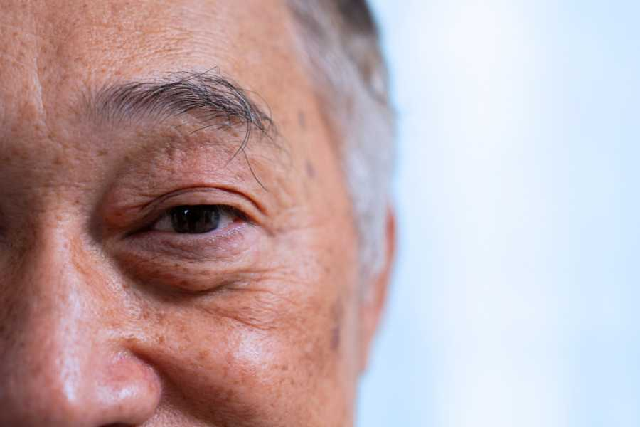
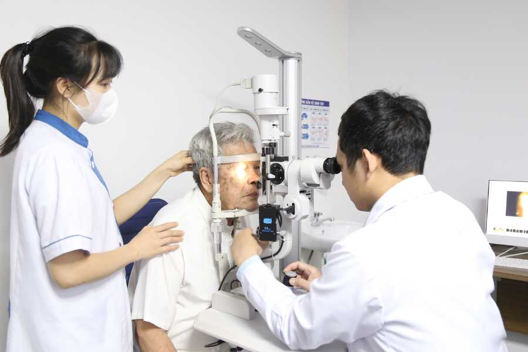

Phaco không đau
Phẫu thuật Phaco không đau là kỹ thuật điều trị đục thủy tinh thể tiên tiến, sử dụng năng lượng sóng siêu âm để tán nhuyễn và hút thủy tinh thể đục ra ngoài qua vết mổ siêu nhỏ (1,8 – 2,2 mm). Thủy tinh thể nhân tạo được đặt thay thế ngay sau đó, giúp phục hồi thị lực tối ưu, giảm thiểu biến chứng và rút ngắn thời gian hồi phục.
Tại VISI, Phaco không đau được triển khai theo quy trình nghiêm ngặt, chặt chẽ từ khâu khám, phẫu thuật đến chăm sóc sau mổ, với đội ngũ bác sĩ giàu kinh nghiệm cùng hệ thống thiết bị hiện đại, đảm bảo an toàn và hiệu quả cao cho người bệnh.
Phaco không đau được chỉ định cho

- Người mắc đục thủy tinh thể với các triệu chứng: nhìn mờ, lóa sáng, giảm khả năng phân biệt màu sắc, khó khăn khi đọc sách hoặc lái xe.
- Người cao tuổi có đục thủy tinh thể ảnh hưởng đến sinh hoạt hàng ngày.
- Trường hợp đục thủy tinh thể đi kèm bệnh lý khác cần can thiệp sớm để phòng ngừa biến chứng nguy hiểm (tăng nhãn áp, viêm màng bồ đào, trật thủy tinh thể...).
- Người mắc đục thủy tinh thể với các triệu chứng: nhìn mờ, lóa sáng, giảm khả năng phân biệt màu sắc, khó khăn khi đọc sách hoặc lái xe.
- Người cao tuổi có đục thủy tinh thể ảnh hưởng đến sinh hoạt hàng ngày.
- Trường hợp đục thủy tinh thể đi kèm bệnh lý khác cần can thiệp sớm để phòng ngừa biến chứng nguy hiểm (tăng nhãn áp, viêm màng bồ đào, trật thủy tinh thể...).
Ưu điểm của phương pháp PHACO KHÔNG ĐAU
- Không còn nỗi sợ ĐAU: Khác với lo ngại về “mổ mắt” trong suy nghĩ của nhiều người, phẫu thuật Phaco tại VISI được thực hiện bằng dao vi phẫu chuyên dụng với đường rạch rất nhỏ (1,8 - 2,2mm), kết hợp gây tê tại chỗ hiệu quả. Nhờ tay nghề vững vàng của đội ngũ bác sĩ cùng hệ thống máy phẫu thuật hiện đại, người bệnh gần như không cảm thấy đau trong suốt quá trình thực hiện, thời gian hồi phục nhanh, hạn chế tối đa tổn thương mô xung quanh.
- Độ chính xác vượt trội: PHACO KHÔNG ĐAU tại VISI mang lại độ chính xác gần như tuyệt đối trong quá trình phẫu thuật. Từng thao tác phẫu thuật đều được thực hiện bởi đội ngũ bác sĩ chuyên khoa sâu, có nhiều năm kinh nghiệm, đã thực hiện thành công hàng chục nghìn ca mổ đục thủy tinh thể.
- Quy trình nhanh chóng và an toàn: Quy trình phẫu thuật điều trị đục thủy tinh thể bằng phương pháp PHACO KHÔNG ĐAU diễn ra nhanh chóng, nhẹ nhàng và ít xâm lấn. Bệnh nhân sẽ không cảm thấy đau đớn, thời gian hồi phục nhanh chóng, và có thể trở lại với cuộc sống thường nhật chỉ sau vài ngày.
Lý do nên lựa chọn VISI

- Đội ngũ bác sĩ chuyên nghiệp: Tại bệnh viện VISI, chúng tôi hiểu rằng mỗi ca phẫu thuật đều quan trọng. Đội ngũ bác sĩ của chúng tôi với nhiều năm kinh nghiệm trong lĩnh vực phẫu thuật đục thủy tinh thể, luôn sẵn sàng hỗ trợ bạn và người thân của bạn. Hơn 30.000 ca phẫu thuật thành công là minh chứng cho sự tận tâm và chuyên môn của chúng tôi.
- Hỗ trợ bảo hiểm y tế: Các Bệnh viện thuộc hệ thống VISI cho phép bệnh nhân từ mọi tỉnh thành trên cả nước đến khám và điều trị bằng thẻ Bảo hiểm Y tế. Đội ngũ Chăm sóc khách hàng của chúng tôi luôn sẵn sàng tư vấn và hỗ trợ bệnh nhân thực hiện các thủ tục nhanh chóng, tiện lợi.
- Chăm sóc tận tình: Chúng tôi hiểu rằng việc điều trị có thể gây lo lắng, đặc biệt đối với người cao tuổi. Đội ngũ nhân viên sẽ luôn bên cạnh, hướng dẫn và hỗ trợ bạn và người thân trước và sau phẫu thuật.
- Theo dõi sau phẫu thuật: Sau khi phẫu thuật, chúng tôi sẽ tiếp tục theo dõi sức khỏe cho bệnh nhân và nhắc nhở lịch tái khám. Nếu bạn có bất kỳ câu hỏi nào, đừng ngần ngại liên hệ với chúng tôi. Chúng tôi luôn sẵn sàng lắng nghe và hỗ trợ.